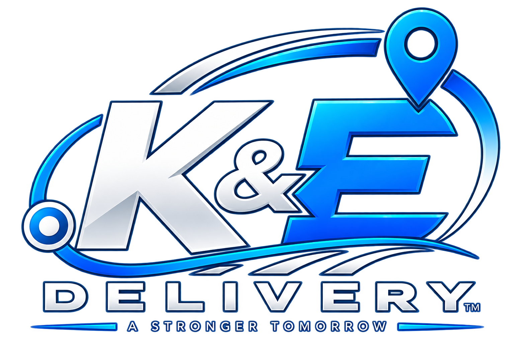
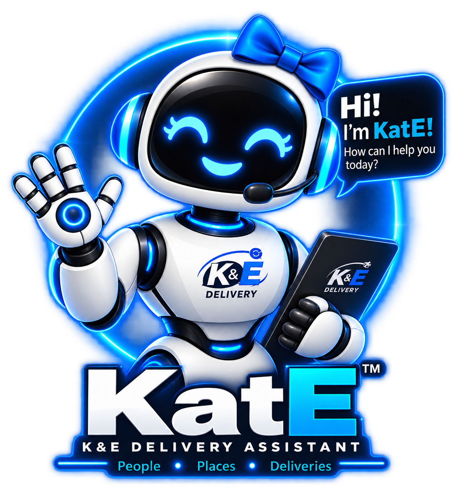
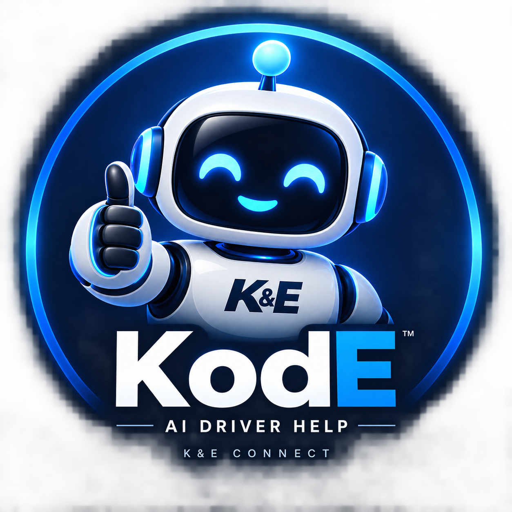
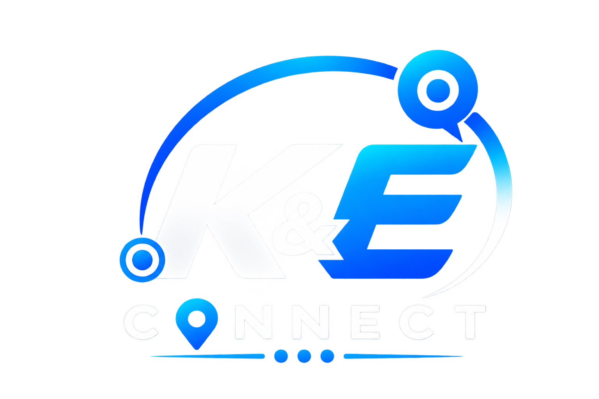

Our Customers
You're not a tracking number. You're a person trusting K&E to complete an important connection, and we'll treat your delivery that way.

WELCOME TO THE K&E FAMILY
We don't just make deliveries. We connect people, places, opportunities, drivers, customers and partners — one delivery at a time. When you choose K&E, you become part of the family we're building together.
THE K&E CONNECTION
THE FRONT DOOR TO OUR FAMILY
Whether you're trusting us with a delivery, joining us as a driver, or partnering with us to serve your customers, we want you to feel something bigger than a transaction. At K&E, relationships come first. We earn trust, make connections and grow together.
You're not a tracking number. You're a person trusting K&E to complete an important connection, and we'll treat your delivery that way.
Driving with K&E is more than completing routes. Our drivers represent our family in the communities we serve and are part of what we're building.
We don't want to simply win contracts. We want long-term partnerships built on communication, accountability, trust and shared growth.
CONNECTIONS IN MOTION
Professional pickup and final-mile delivery that reconnects passengers with their baggage.
Dependable support when a passenger's journey and their baggage need to be connected again.
Structured routes, driver coordination and delivery workflows built around reliable human connections.
WHY K&E
K&E Freight Solutions / K&E Delivery Express combines professional airport logistics with a family-minded approach. Technology helps us move faster and communicate better, but people remain at the center of everything we do. Our goal is simple: make every connection stronger than we found it.
MEET THE K&E AI FAMILY
KatE takes care of our customers as the K&E Delivery Assistant. KodE takes care of our drivers through K&E Connect. Together, they help connect both sides of the delivery experience.
Customer side + Driver side. One K&E Family.

KatE • Customer Connection
KodE • Driver ConnectionK&E CONNECT
K&E Connect supports our driver workflow from route acceptance through delivery completion, helping our operation stay connected while our drivers are in the field.

JOIN THE K&E FAMILY
We're building relationships with professional independent drivers who value reliability, communication, customer care and being part of something that's growing.
Become a K&E DriverLET'S MAKE A CONNECTION
Customer, future driver, or future partner — we'd love to hear from you.
Connect With K&E